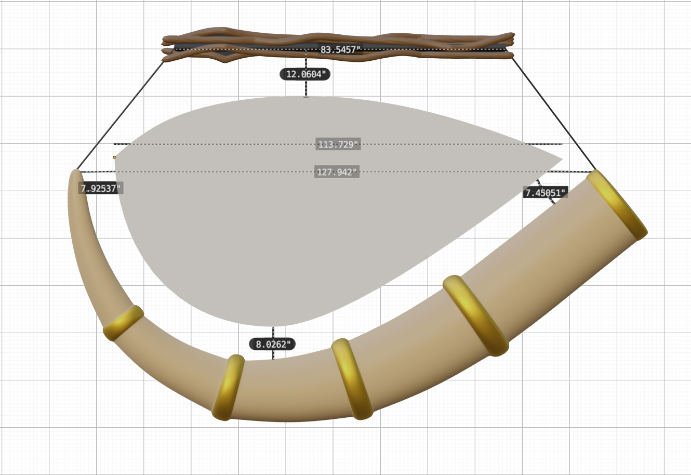

Aaron Greider Graphic Designer/Front-End Web Developer at Jungle Jim’s International Market. BS Communication Design from UC DAAP 2022. Cincinnati Nature Center Member and new volunteer (2025!). Eagle Scout and native plant enthusiast. Bane of honeysuckle.
A large bit of my work at Jungle Jim’s has consisted of festival promotion and design – but it wasn’t until the then brand new festival, Pickle Wars, was tossed on my lap that I was able to explore creating an experiential system that was both accessible to vistors while having overall goofy and lighthearted atmostphere.
From a 10 foot Pickle Godzilla to 12 inch gold wrestling belts, this was a chance to really get wacky with it and have a ton of fun with the festival experience.

The largest thing I ever installed at Jungle Jim’s was the entryway to a new 2000 sq ft addition to the store. The mural depicts the Pashupatinath Temple in Kathmandu with simple linework, vibrant colors, and dense texturing. While we didn’t have the space to make it life sized, the mural still stands at about 30 feet tall.
Jungle Jim (the man himself) had some spare tusks laying around that he wanted used for something, so he had me design a larger than life department sign for the recently expanded Africa section in both stores. Below are a couple of assets involved in design the display and mocking it up.
In addition to graphic design, I’ve been a large part in bringing the usability of junglejims.com into the modern era by making our databases searchable and accessible on the web! I’ve built search apps for browsing our general inventory, seafood selection , discounted beer & wine, and the high-end Boniminio Wine Cellar.